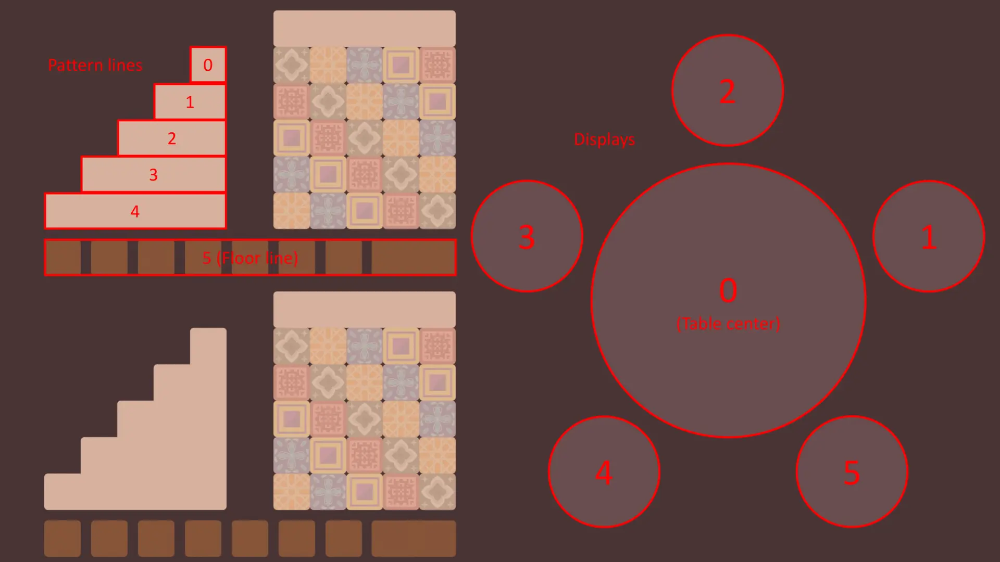
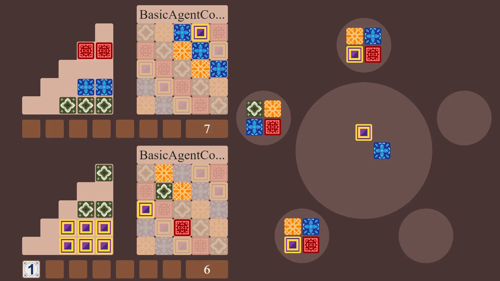

Communication between the game runner and your bot happens via the standard input and output streams. The example bots contain example code to handle input and output.
The communication protocol between the game runner and bots uses integers to index the pattern lines and displays. This indexing is visualized in the image below. In addition to the 5 factory displays, the table center is considered an additional display with index 0. Tiles can be placed on pattern lines as well as the floor line, which has index 5.
Tile colors are represented by single characters: g(reen), o(range), b(lue), y(ellow), and r(ed).
At the start of the game, your bot is required to write exactly one line with one of the following options: update, state, or both. These indicate the form of input the bot will receive at the start of their turn.
If you specify update, your bot will receive a list of updates describing what changed in the game state with respect to your previous turn. Choosing state will have your bot receive a complete description of the game state at the start of your turn. The option both will result in consecutively receiving all update information and then all state information. The input should be completely read before writing any output. Communication consists of lines composed of space-separated numbers or letters.
Regardless of the chosen input form, the first line that is received each turn is a single number, which is the remaining computation time in milliseconds for your bot. This is the time left for all your remaining turns and is similar to the remaining time on a chess clock in competitive matches.
This form of input starts with one line with a single number which represents the amount of updates that will be received as input. Then for each update, a line with either restock or move follows, indicating the type of update which follows.
A restock update is received if the factory displays have been refilled since the last time your bot made a move. It consists of a line for each of the factory displays (so 5 in total) which each contain 5 integers fg fo fb fy fr. Each integer fc on the i-th line equals the amount of color c that is present on display i after the restocking. Note that the table center always contains the starting player marker after a restocking and no other tiles.
A move update is received if the opponent took an action the previous turn by collecting tiles from a display. The update consists of a single line with 3 integers d c ℓ indicating that the opponent took all c colored tiles from display d and placed them on pattern line ℓ (or the floor line in the case that ℓ=5). This matches with the output of your opponent's previous turn.
First, one line of six integers fg fo fb fy fr p is received which represents the tiles present on the table center. If the starting player marker is still located on the table center p will be equal to 1, and 0 otherwise. Then, one line fg fo fb fy fr follows for each factory display. Similarly to the input for the restock update, each integer fc on the i-th line equals the amount of color c that is present on display i after the restocking (the six integer line is considered the 0-th line and corresponds to the contents of the table center).
Then, a line with one of the following strings is received: you, opponent, or none. This indicates which player has picked the starting player marker (which is now on their floor line), or none if it is still on the table center.
Then for both players, starting with you, the following information is presented.
A line for each of the player's pattern lines follows, each consisting of an integer n and character c. The i-th line (starting from 0) specifies that there are n tiles of the color c on the i-th pattern line (with length i) of the player. If the pattern line is empty, this will be represented by "0 .".
Next, you will receive a line for each of the 5 rows of the wall, each having 5 characters. The i-th character on the j-th row is the color of the tile at the i-th position from the left and j-th position from the top or "." if there is no tile at that position.
Finally, a last line with two integers is sent, which respectively represent the length of the floor line and score of the player.
The following example shows the input that would be sent in the scenario where the top board in the image corresponds to your bot. The game state at the start of your turn is as shown in the image. For this example, we assume that you chose to receive both forms of input.
Example interactions can be generated by using the game runner to make two example bots play against each other.
Note that lines 2–4 are part of the update protocol, while lines 5–33 are part of the state protocol. If you had chosen one of the two (instead of both), the other would be omitted from the input.
Before the first turn the bot should send their desired input form as previously described. In all other turns, a bot ends their turn by writing a single line to the standard output stream consisting of three numbers d c ℓ. This means that their move is to take all c colored tiles from display d and place them on pattern line ℓ (or the floor line in the case that ℓ=5).
Note that it is required to take at least one tile, which cannot only be the starting player marker. A game state without legal moves will never occur. (Specifically, the special case where only the starting player marker is left on the table center will never occur.)
In addition to the chosen actions sent through the standard output stream, your bot can log debug information through the standard error stream at any time. For each of the supported languages, this can be done as follows:
For each move, the corresponding debug information is shown to the right of the visualization. The debug information sent by your bot in the actual competition will be exclusively shown to members of your team.